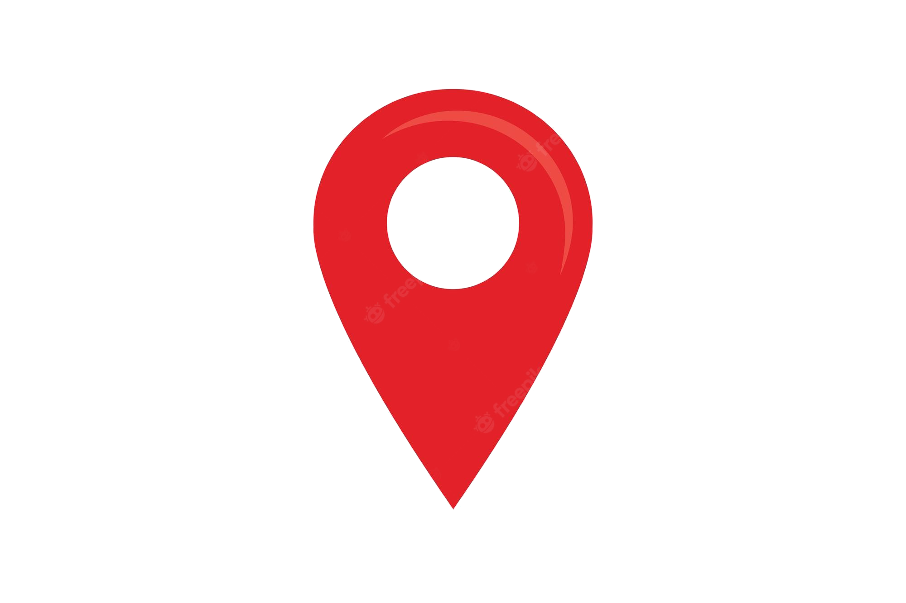
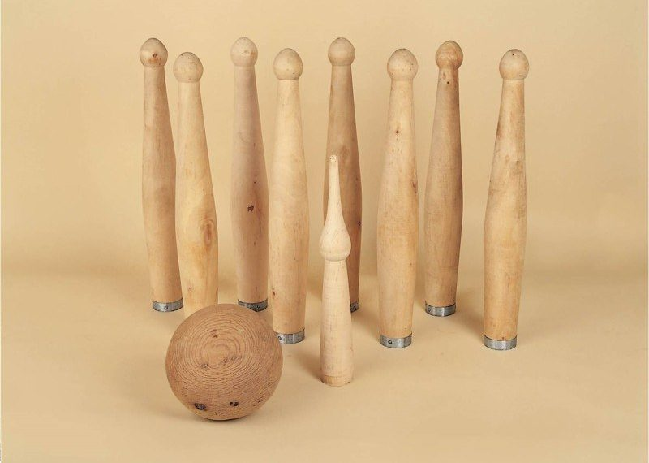
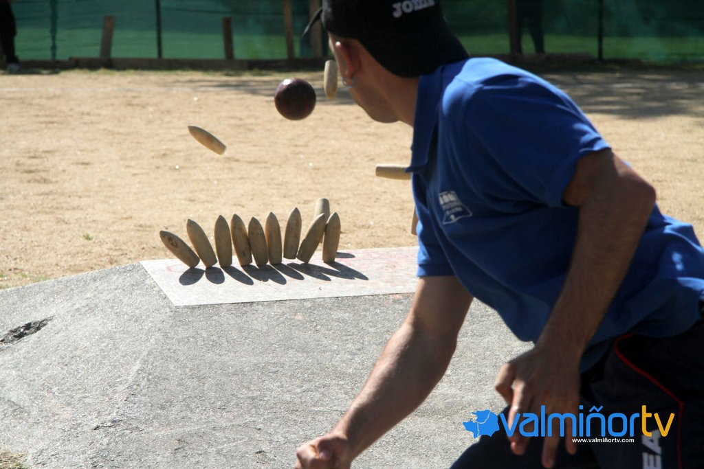
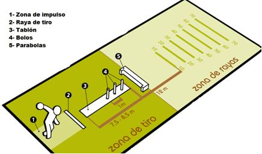

La popularidad de los deportes en España está principalmente copada por el fútbol, el baloncesto, los deportes de motor, el ciclismo, el tenis, el balonmano, el atletismo, la natación, el atletismo, el fútbol sala o la gimnasia rítmica. En nuestro país hemos tenido campeones del mundo en multitud de disciplinas: pádel, bádminton, hockey sobre patines, vela, boxeo, patinaje artístico, natación sincronizada, waterpolo, gimnasia artística o esgrima pero ¿Cuáles de estos deportes tienen origen español?
La historia de cada disciplina deportiva es un cúmulo de tradiciones que finalmente deriva en una práctica debidamente reglada.
| 
| |
|---|---|
La esgrima sería, al parecer, la única disciplina olímpica cuyo origen se haya en nuestro país. Aunque existe un posible antecedente de un bajorrelieve egipcio del siglo XII a. C en el que aparece una competición con armas, no fue hasta el siglo XVI cuando los duelos de espadachines tomaron fuerza. La esgrima era una práctica habitual en países como Inglaterra, Francia o Italia, pero fue en España donde aparecieron la espada ropera o estoque y los primeros manuales sobre la técnica.
🤺El equipo español de espada @rfeEsgrima a solo un tocado de hacerse con el orohttps://t.co/3cLzm1d3vm
— As Más Deporte (@As_MasDeporte) November 22, 2021
Material:
Juego:
campo:
